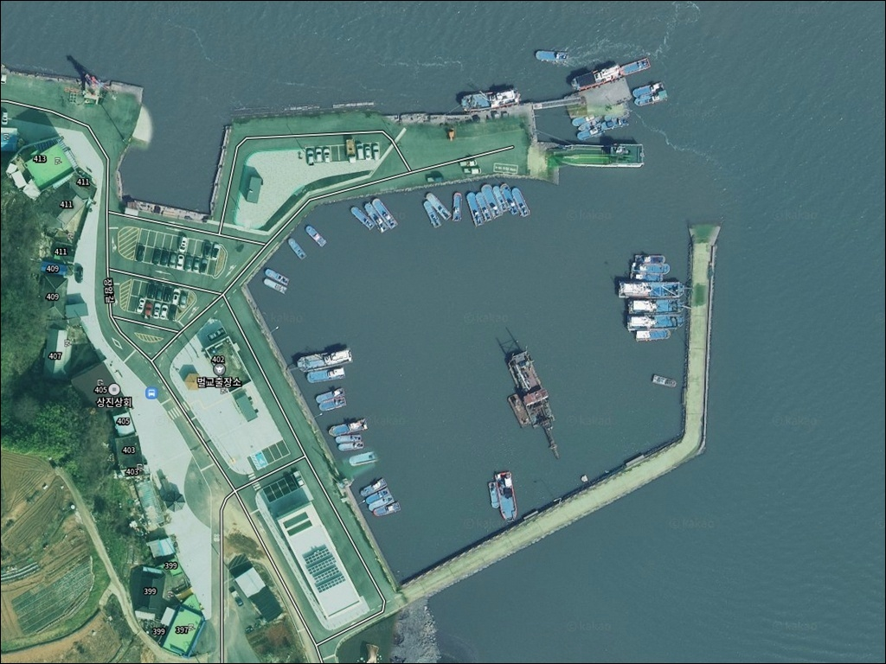
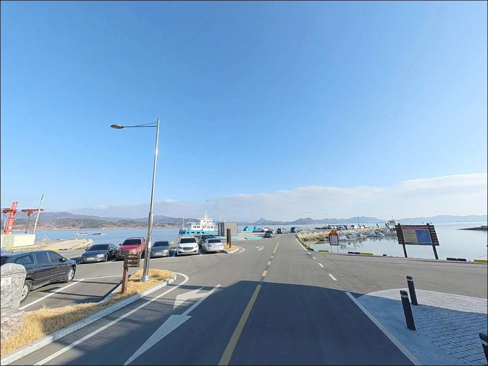
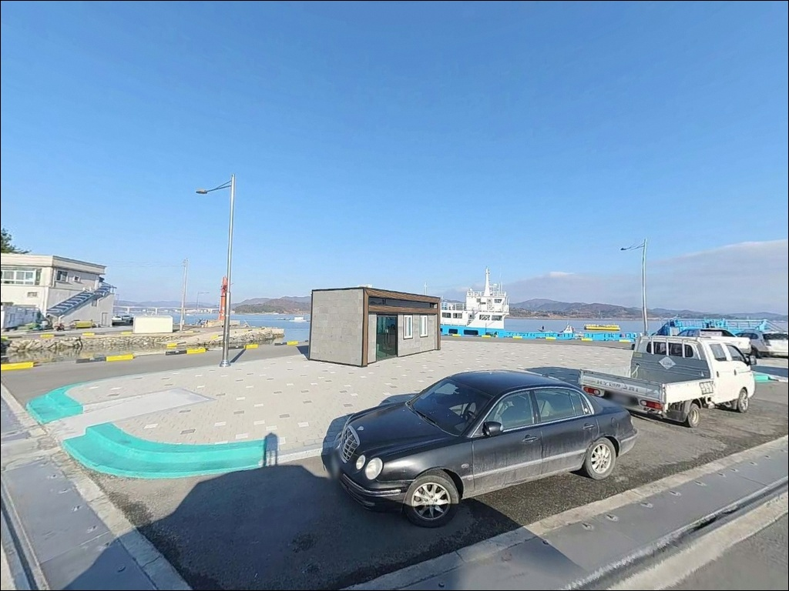
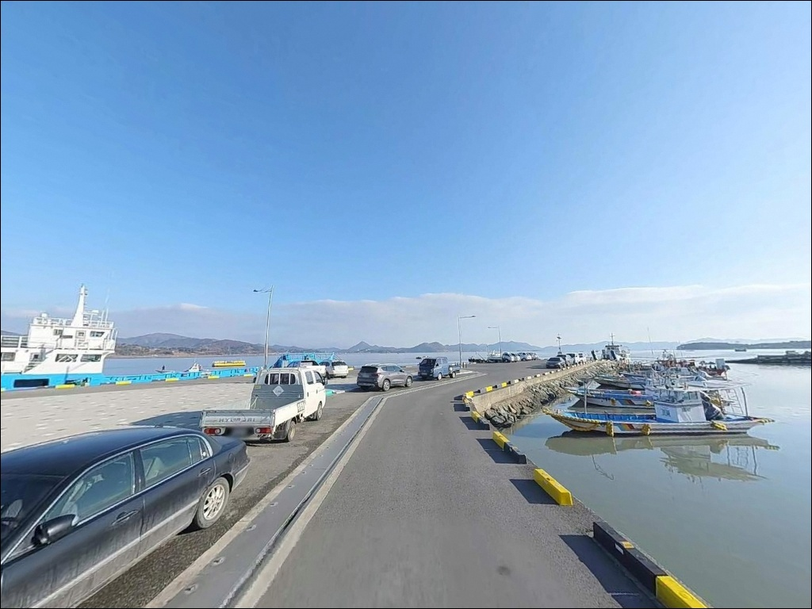
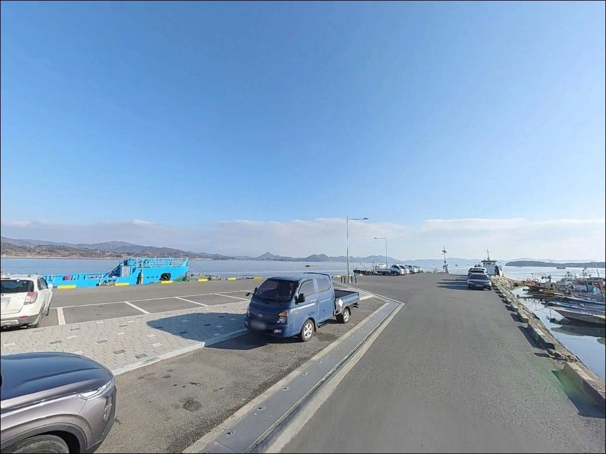
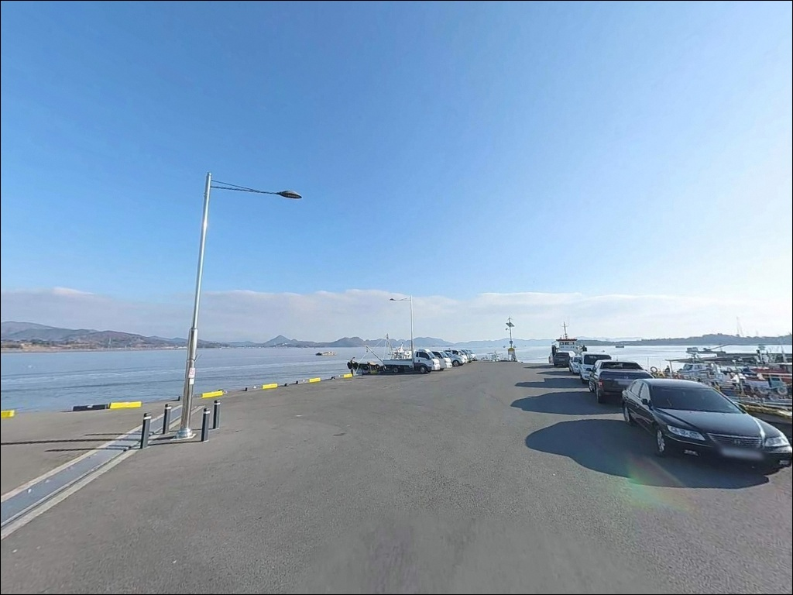
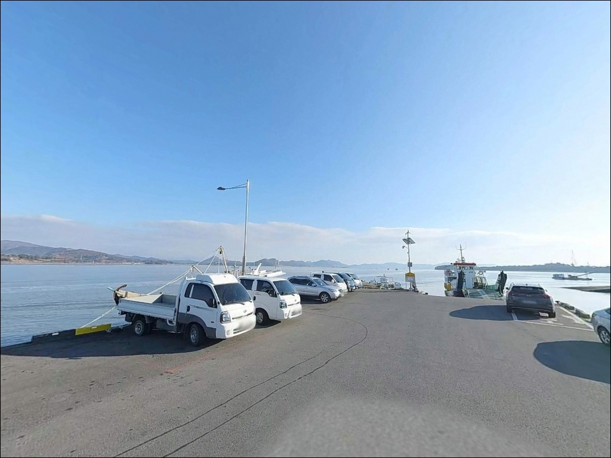
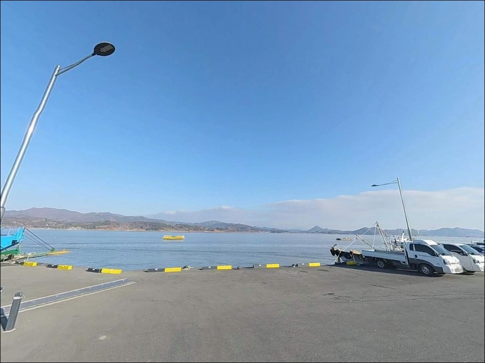
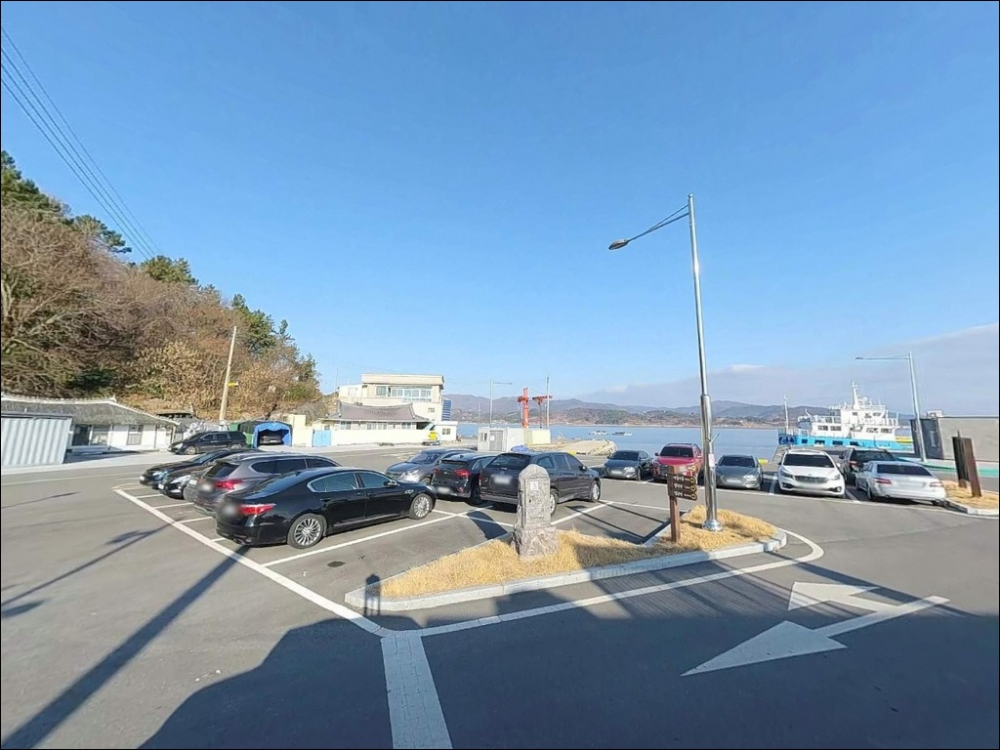

간조 시 갯벌만 드러나는 상진항, 만조 전후 2시간에 맞춘 원투낚시
이 페이지에는 광고(제휴 링크 포함)가 있으며, 광고 링크를 통해 구매하면 운영자가 판매 수익 또는 수수료를 받을 수 있습니다. 포인트 사진: 카카오맵 스카이뷰·로드뷰. 이 페이지의 지도·사진 이미지는 카카오맵의 실제 서비스 이미지와 다를 수 있습니다.


포인트 안내
상진항
전남 보성군 벌교읍 장암리 238-7
물때 확인 없이 상진항에 들어서면
광활한 갯벌만 눈앞에 펼쳐집니다.
간조 시 선착장 전 구간의 바닥이 드러나
어떤 채비로도 낚시 자체가 불가능한 구조입니다.
만조 전후 2~3시간이 이 포인트의 전부이며,
그 타이밍을 맞추느냐 놓치느냐가
방문 성패를 갈라놓습니다.
상진항은 전남 보성군 벌교읍 장암리에 자리한
지방어항입니다.
여자만 내만 깊숙이 위치한 갯벌형 항구로,
방파제 68m, 선착장 50m, 물양장 40m 구조를 갖추고 있습니다.
어촌뉴딜300 사업으로 시설이 정비되었으며,
장도행 철부선 '장도사랑호'의 출발지로도 운영되고 있습니다.
이 글은 상진항의
진입 동선, 낚시 여건, 물때 판단 기준,
차박 체류 조건에 집중합니다.
조황 단정이나 특정 어종 보장은
이 글의 범위에 포함되지 않습니다.

1. 진입 동선과 차량 접근 여건
상진항은 벌교읍 중심부에서 장암길을 따라
약 15km 이상 이동하는 외곽 위치입니다.
진입로 전 구간이 포장되어 있어
비포장 구간 없이 선착장까지 들어갈 수 있지만,
도로 폭이 좁은 구간이 있어
교행 시 서행이 필요합니다.
대형 차량이나 캠핑 트레일러를 운용한다면
출발 전 위성지도로 장암길 말단 구간을
미리 확인해 두는 편이 좋습니다.
선착장 입구와 주변 평탄지에서
중형 차량 기준 회차가 가능한 공간이 확보됩니다.
대형 차량은 회차 여건이 제한적입니다.
주차는 어촌뉴딜300 사업으로 정비된
선착장 입구 주차장을 활용합니다.
철부선 이용객용 무료 주차장 구조로,
어업 차량 통행 동선과 구분되어 있습니다.
어선 접안 공간을 침범하지 않는 자리가 우선입니다.

2. 차박 환경과 야간 체류 여건
상진마을은 인구가 적은 소규모 어촌입니다.
야간 차량 통행이 거의 없고
민가 밀집도가 낮아
프라이버시는 상대적으로 양호한 편입니다.
별 관측이 가능할 만큼 인공 조명이 적어
조용한 하룻밤을 원하는 낚시꾼에게
나쁘지 않은 환경입니다.
가로등은 선착장 입구 구간에만 설치되어 있으며,
선착장 끝단은 야간에 매우 어두운 환경입니다.
헤드랜턴과 충분한 조명 장비가 필수이며,
만조 시 선착장 상단까지 물이 차오를 수 있어
수위 변화를 주기적으로 확인해야 합니다.
차박 공간은 선착장 입구 정비된 주차장 구역입니다.
공간 자체는 여유 있는 편이지만
철부선 운항 첫 배 시간에 맞춰
이른 아침 어선 및 차량 통행이
시작될 수 있다는 점을 감안해야 합니다.


3. 주변 편의시설 및 인프라 현황
어촌뉴딜300 사업 완료로
공용화장실과 승선대기소가
항 내에 정비되어 있습니다.
기본 위생 시설은 갖춰진 편이지만,
반경 3km 이내 편의점이나 마트는 없습니다.
장암리 일대가 농어촌 외곽 지역이라
소매 상업시설 자체가 분포하지 않습니다.
식수, 얼음, 낚시 소품, 연료는
출발 전 벌교읍 시내에서 모두 준비하고
진입하는 것이 현실적인 방법입니다.
벌교읍까지는 차량으로 20분 안팎 거리이므로
부족한 장비가 생기면
왕복 이동 시간을 감안한 계획이 필요합니다.
응급 상황 발생 시
벌교읍 내 의원과 약국이 가장 가까운 대안입니다.
거리가 있는 만큼 비상약품과 개인 구급용품은
출발 전 철저히 챙겨야 합니다.

4. 물때가 전부인 포인트, 출조 전 준비사항
상진항 방문 전에 가장 먼저 확인할 것은
물때입니다.
여자만 일대는 조석 간만의 차가 크고,
간조 시 선착장 전 구역의 바닥이 드러납니다.
낚시 가능 시간대는
만조 전후 2~3시간으로 한정되며,
이 타이밍 바깥에서는 어떤 채비로도
정상적인 낚시가 어렵습니다.
바다타임에서 장암리 기준 물때를 확인하고
출발 시각을 역산하는 것이 기본 전략입니다.
뻘 바닥 지형 특성상 채비 손실보다
봉돌이 바닥에 박히는 경우가 잦습니다.
원투채비는 무거운 봉돌로 뻘에 안착시키는 방식을 쓰며,
여분 봉돌과 채비는 넉넉하게 준비하는 편이 좋습니다.
선착장 끝단은 이끼와 해조류로
발판이 미끄러운 구간이 있어
미끄럼 방지 신발은 필수입니다.
여자만은 연안습지 보호구역 및
람사르 협약 등록 구역입니다.
꼬막 등 지역 특산물 채취 시설물 주변에서의
행동에 주의해야 하며,
갯벌이 드러난 상태에서
선착장 외부 갯벌 진입은 하지 않는 것이 기본입니다.

5. 지형 기반 낚시 여건 분석
상진항은 여자만 내만 안쪽, 갯벌로 둘러싸인
소형 항구입니다.
방파제 68m가 외측 파도를 차단하는 구조이며,
선착장 끝단으로 갈수록
수심이 급격히 깊어지는 구간이 형성됩니다.
방파제 끝단 기준 만조 시 수심은 3~5m 내외입니다.
바닥 전체가 뻘 지형으로 이루어져 있습니다.
갯바위 접근 구간은 없으며,
연안부는 갯벌이 넓게 펼쳐지는 구조입니다.
낙지, 백합, 바지락 등 저서생물 밀도가 높은
여자만 해역 특성상
이를 먹이원으로 삼는 어종들이
만조 시 선착장 주변으로 붙는 패턴을 보입니다.
간조 시 갯벌이 완전히 드러나는 상진항에서는
만조 전후 2~3시간이 낚시 가능한 전부입니다.
이 시간대를 집중적으로 활용하는 것이
이 포인트를 제대로 공략하는 방법이며,
최신 조황은 가기 전에 반드시 검색해 보시기 바랍니다.


6. 포인트에 어울리는 낚시 스타일
이 포인트에서 가장 안정적인 방식은
원투낚시입니다.
만조 전후 갯벌 수로를 따라 회유하는 어종을
선착장 끝단 또는 방파제 선단에서
외항 방향으로 채비를 보내는 구조입니다.
뻘 바닥에 채비를 안착시키는 무거운 봉돌 세팅이
이 지형에서 기본 원칙입니다.
이 일대 여자만 해역에서 기대해 볼 수 있는 어종은
붕장어, 망둥어, 도다리(봄철), 숭어입니다.
릴찌낚시도 이 포인트 구조에 어울립니다.
내만 특성상 조류 흐름이 약한 편이라
고정형 채비 운용이 안정적입니다.
만조 전후 방파제 외측에서
수층을 탐색하는 방식으로
감성돔을 노려볼 수 있는 구조입니다.
루어낚시도 선착장 주변에서 운용이 가능합니다.
여자만 내만 특성상 숭어의 밀집 빈도가 높아,
만조 전후 선착장 주변 경계면에서
연질 루어 계열 운용이 유효합니다.
민장대 낚시는 만조 시 선착장 벽면으로
붙는 망둥어와 숭어를 대상으로
가벼운 채비로 운영하는 방식입니다.

7. 낚시 여건이 맞지 않을 때 플랜 B 동선
상진항의 물때가 맞지 않거나
주차 공간이 여의치 않을 때는
장양항이 첫 번째 대안입니다.
같은 벌교읍 내 어촌정주어항으로
선착장 규모가 조금 더 크고
낚시 자리 선택 폭이 넓은 편입니다.
여자만 갯벌형 낚시 패턴은 동일하게 적용됩니다.
대포항도 대안으로 꼽을 수 있습니다.
상진항에서 약 8~10km 거리의
벌교읍 대포리 소재 어항으로,
여자만 동일 해역의 낚시 패턴을 공유합니다.
물때 타이밍을 함께 묶어서
두 곳을 순서대로 돌아보는 동선도
이 권역에서 효율적인 방법입니다.
차박 여건이 상진항보다 나은 대안을 원한다면
벌교생태공원 주차장 방향을 고려할 수 있습니다.
노면이 평탄하고 편의시설 접근성이
상진항보다 월등히 높은 편입니다.

물때 한 번 잘 맞추면
상진항이 다르게 보입니다
원투낚시나 릴찌낚시를 즐기는 낚시꾼이라면
상진항의 뻘 바닥 갯벌형 지형은
잘 맞는 구조입니다.
방파제 68m 구조의 끝단에서 수심이 급격히 깊어지는 구간이
원투낚시의 핵심 자리입니다.
온라인 조황 정보가 많지 않은 포인트인 만큼
가기 전 벌교 권역 최신 조황을
먼저 검색해 두는 것이 좋습니다.
반면 물때 계산 없이 방문하거나
간조 시간대에 도착하면
낚시 자체가 불가능한 상황을 맞닥뜨립니다.
어촌뉴딜300 사업으로 정비된 주차장과 화장실은
갖춰져 있지만,
반경 3km 이내 편의시설이 없다는 점은
출발 전 반드시 감안해야 합니다.
조용한 여자만 내만에서
만조 타이밍에 맞춰 원투채비를 던지고
정비된 주차장에서 하룻밤 머무는 낚시꾼에게는
물때 하나 잘 맞추면 기억에 남는 출조가 되는 곳입니다.